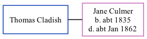

Thomas Cladish, the husband of Jane Culmer (the three times great-aunt of Nigel Horne), and married Jane (a house keeper) in Canterbury, Kent, England around Aug 18611.
Citations
England & Wales Marriages 1837-2005 - Findmypast
Family Tree

Generated by ged2site. Last updated on Nov 13, 2024